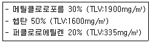
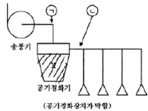
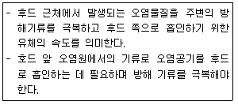
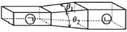

산업위생관리산업기사 (2018-08-19 기출문제)
1과목: 산업위생학 개론
1. 직업병의 예방대책에 관한 설명으로 가장 거리가 먼 것은?
- 유해요인을 적절하게 관리하여야 한다.
- 유해요인에 노출되고 있는 모든 근로자를 보호하여야 한다.
- 건강장해에 대한 보건교육을 해당 근로자에게만 실시한다.
- 근로자들이 업무를 수행하는데 불편함이나 스트레스가 없도록 하여야 하며, 새로운 유해요인이 발생되지 않아야 한다.
(정답률: 96%)

2. 유해물질의 허용농도의 종류 중 근로자가 1일 작업시간 동안 잠시라도 노출되어서는 아니되는 기준을 나타내는 것은?
- PEL
- TLV-TWA
- TLV-C
- TLV-STEL
(정답률: 90%)
3. 미국산업위생학술원에서 채택한 산업위생전문가 윤리강령의 내용과 거리가 먼 것은?
- 기업체의 비밀은 누설하지 않는다.
- 사업주와 일반 대중의 건강 보호가 1차적 책임이다.
- 위험요소와 예방조치에 관하여 근로자와 상담한다.
- 전문적 판단이 타협에 의해서 좌우될 수 있으나 이해관계가 있는 상황에서는 개입하지 않는다.
(정답률: 71%)
4. 작업 자세는 에너지 소비량에 영향을 미친다. 바람직한 작업자세가 아닌 것은?
- 정적 작업을 피한다.
- 불안정한 자세를 피한다.
- 작업물체와 몸과의 거리를 약 30cm 유지토록 한다.
- 원활한 혈액의 순환을 위해 작업에 사용하는 신체부위를 심장높이보다 아래에 두도록 한다.
(정답률: 75%)
5. 야간교대 근무자의 건강관리 대책상 필요한 조건 중 관계가 가장 작은 것은?
- 난방, 조명 등 환경조건을 갖출 것
- 작업량이 과중하지 않도록 할 것
- 야근에 부적합한 자를 가려내는 검진을 할 것
- 육체적으로나 정신적으로 생체의 부담도가 심하게 나타나는 순으로 저녁근무, 밤근무, 낮근무 순서로 할 것
(정답률: 91%)
6. 재해율을 산정할 때 근로자가 사망한 경우에는 근로손실 일수는 얼마로 하는가? (단, 국제노동기구의 기준에 따른다.)
- 3000일
- 4000일
- 5500일
- 7500일
(정답률: 77%)
7. Shimonson이 말하는 산업피로 현상이 아닌 것은?
- 활동지원의 소모
- 조절기능의 장애
- 중간대사물질의 소모
- 체내의 물리화학적 변화
(정답률: 51%)
8. 우리나라 산업위생의 역사에 있어서 1981년에 일어난 일과 가장 관계가 깊은 것은?
- ILO 가입
- 근로기준법 제정
- 산업안전보건법 공포
- 한국산업위생학회 창립
(정답률: 57%)
9. 피로한 근육에서 측정된 근전도(EMG)의 특징으로 맞는 것은?
- 저주파수(0~40Hz) 힘의 증가, 총전압의 감소
- 고주파수(40~200Hz) 힘의 감소, 총전압의 증가
- 저주파수(0~40Hz) 힘의 감소, 평균주파수의 증가
- 고주파수(40~200Hz) 힘의 증가, 평균주파수의 증가
(정답률: 65%)
10. 실내공기질관리법령상 다중이용시설에 적용되는 실내공기질 권고기준 대상 항목이 아닌 것은?
- 석면
- 라돈
- 이산화질소
- 총휘발성유기화합물
(정답률: 63%)
11. 태양광선이 없는 옥내 작업장의 WBGT(℃)를 나타내는 공식은 무엇인가? (단, NWB는 자연습구온도, DB는 건구온도, GT는 흑구온도이다.)
- WGBT=0.7NWB+0.3GT
- WGBT=0.7NWB+0.3DB
- WGBT=0.7NWB+0.2GT+0.1DB
- WGBT=0.7NWB+0.2DB+0.1GT
(정답률: 84%)
12. 산업위생에 대한 일반적인 사항의 설명 중 틀린 것은?
- 유독물질 발생으로 인한 중독증을 관리하는 것으로 제조업 근로자가 주 대상이다.
- 작업환경 요인과 스트레스에 대해 예측, 인식, 평가, 관리하는 과학과 기술이다.
- 사업장의 노출정도에 따라 사업장에서 발생하는 유해인자에 대해 적절한 관리와 대책을 제시한다.
- 산업위생전문가는 전문가로서의 책임, 근로자에 대한 책임, 기업주와 고객에 대한 책임, 일반 대중에 대한 책임 등의 윤리강령을 준수할 필요가 있다.
(정답률: 87%)
13. 작업환경측정 및 지정측정기관평가 등에 관한 고시에 있어 시료채취 근로자 수는 단위 작업 장소에서 최고 노출근로자 몇 명 이상에 대하여 동시에 측정하도록 되어 있는가?
- 2명
- 3명
- 5명
- 10명
(정답률: 74%)
14. 인체의 구조에서 앉을 때, 서 있을 때, 물체를 들어 올릴 때 및 띌 때 발생하는 압력이 가장 많이 흡수되는 척추의 디스크는?
- L5/S1
- L3/S2
- L2/S1
- L1/S5
(정답률: 84%)
15. 인간공학적 방법에 의한 작업장 설계 시 정상작업영역의 범위로 가장 적절한 것은?
- 물건을 잡을 수 있는 최대 영역
- 팔과 다리를 뻗어 파악할 수 있는 영역
- 상완과 전완을 곧게 뻗어서 파악할 수 있는 영역
- 상완을 자연스럽게 수직으로 늘어뜨린 상태에서 전완을 뻗어 파악할 수 있는 영역
(정답률: 84%)
16. 산업안전보건법상 제조업에서 상시 근로자가 몇 명 이상인 경우 보건관리자를 선입하여야 하는가?
- 5명
- 50명
- 100명
- 300명
(정답률: 82%)
17. 산업안전보건법령상 최근 1년간 작업공정에서 공정 설비의 변경, 작업방벙의 변경, 설비의 이전, 사용 화학 물질의 변경 등으로 작업환경측정결과에 영향을 주는 변화가 없는 경우로 해당 유해인자에 대한 작업환경 측정을 1년에 1회 이상으로 할 수 있는 경우는?
- 작업장 또는 작업공정이 신규로 가동되는 경우
- 작업공정 내 소음의 작업환경측정 결과가 최근 2회 연속 90데시벨(dB) 미만인 경우
- 작업환경측정 대상 유해인자에 해당하는 화학적 인자의 측정치가 노출기준을 초과하는 경우
- 작업공정 내 소음 외의 다른 모든 인장의 작업환경측정 결과가 최근 2회 연속 노출기준 미만인 경우
(정답률: 71%)
18. 국소피로와 관련한 작업강도와 적정 작업시간의 관계를 설명한 것 중 틀린 것은?
- 힘의 단위는 kp(kilo pound)로 표시한다.
- 적정 작업시간은 작업강도와 대수적으로 비례한다.
- 1kp(kilo pound)는 2.2pounds의 중력에 해당한다.
- 작업강도가 10% 미만인 경우 국소피로는 오지 않는다.
(정답률: 65%)
19. 근골격계 질환을 예방하기 위한 조치로 적절한 것은?
- 손잡이에 완충물질을 사용하지 않는다.
- 작업의 방법이나 위치를 변화시키지 않는다.
- 임팻트 렌치나 천공 해머를 사용하지 않는다.
- 가능한 파워 그립보단 핀치 그립을 사용할 수 있도록 설계한다.
(정답률: 62%)
20. 생리학적 적성검사 항목이 아닌 것은?
- 체력검사
- 지각동작검사
- 감각지능검사
- 심폐기능검사
(정답률: 73%)
2과목: 작업환경측정 및 평가
21. 개인시료채취기를 사용할 때 적용되는 근로자의 호흡위치로 옳은 것은? (단, 고용노동부 고시를 기준으로 한다.)
- 호흡기를 중심으로 직경 30cm인 반구
- 호흡기를 중심으로 반경 30cm인 반구
- 호흡기를 중심으로 직경 45cm인 반구
- 호흡기를 중심으로 반경 45cm인 반구
(정답률: 80%)
22. 작업환경측정결과의 평가에서 작업시간 전체를 1개의 시료로 측정할 경우의 노출결과 구분이 바르게 표기된 것은?
- 하한치(LCL)＞1일 때 노출기준 미만
- 상한치(UCL)≤1일 때 노출기준 초과
- 하한치(LCL)≤1, 상한치(UCL)＜1일 때, 노출기준 초과 가능
- 하한치(LCL)＞1일 때 노출기준 초과
(정답률: 57%)
23. 수분에 대한 영향이 크지 않으므로 먼지의 중량 분석에 적절하고, 특히 유리규산을 채취하여 X선 회절법으로 분석하는데 적합한 여과지는?
- MCE막 여과지
- 유리섬유 여과지
- PVC 여과지
- 은막 여과지
(정답률: 70%)
24. 증기상인 A물질 100ppm은 약 몇 mg/m3인가? (단, A물질의 분자량은 58이고, 25℃, 1기압을 기준으로 한다.
- 237
- 287
- 325
- 349
(정답률: 61%)
25. 어느 작업장의 벤젠농도(ppm)를 5회 측정한 결과가 각각 30, 33, 29, 27, 31일 때, 벤젠의 가하평균농도는 약 몇 ppm인가?
- 29.9
- 30.5
- 30.9
- 31.1
(정답률: 68%)
26. 각각의 포집효율이 80%인 임핀저 2개를 직렬로 연결하여 시료를 채취하는 경우 최종 얻어지는 초집효율은?
- 90%
- 92%
- 94%
- 96%
(정답률: 45%)
27. 순간시료채취에서 가스나 증기상 물질을 직접 포집하는 방법이 아닌 것은?
- 주사기에 의한 포집
- 진공 플라스크에 의한 포집
- 시료 채취 백에 의한 포집
- 흡착제에 의한 포집
(정답률: 65%)
28. 다음 중 충격소음에 대한 설명으로 가장 적절한 것은?
- 최대음압수준이 120dB(A) 이상의 소음이 1초 이상의 간격으로 발생하는 소음을 말한다.
- 최대음압수준이 140dB(A) 이상의 소음이 1초 이상의 간격으로 발생하는 소음을 말한다.
- 최대음압수준이 120dB(A) 이상의 소음이 5초 이상의 간격으로 발생하는 소음을 말한다.
- 최대음압수준이 140dB(A) 이상의 소음이 5초 이상의 간격으로 발생하는 소음을 말한다.
(정답률: 75%)
29. 유량, 측정시간, 회수율, 분석에 의한 오차(%)가 각각 15, 3, 5, 9일 때, 누적오차는?
- 18.4%
- 19.4%
- 20.4%
- 21.4%
(정답률: 80%)
30. 혼합유기용제의 구성비(중량비)는 다음과 같을 때, 이 혼합물의 노출농도(TLV)는?

- 937mg/m3
- 1087mg/m3
- 1137mg/m3
- 12837mg/m3
(정답률: 70%)
31. 여과지의 공극보다 작은 입자가 여과지에 채취되는 기전은 여과이론으로 설명할 수 있다. 다음 중 펌프를 이용하여 공기를 흡인하여 채취할 때 크게 작용하는 기전이 아닌 것은?
- 간섭
- 중력침강
- 관성충돌
- 확산
(정답률: 55%)
32. A 물건을 제작하는 공정에서 100% TCE를 사용하고 있다. 작업자의 잘못으로 TCE가 휘발 되었다면 공기중 TEC 포화농도는? (단, 0℃, 1기압에서 환기가 되지 않고, TCE의 증기압은 19mmHg이다.)
- 19000ppm
- 22000ppm
- 25000ppm
- 28000ppm
(정답률: 50%)
33. 정량한계에 관한 내용으로 옳은 것은? (단, 고용노동부 고시를 기준으로 한다.)
- 분석기기가 정량할 수 있는 가장 작은 오차를 말한다.
- 분석기기가 정량할 수 있는 가장 작은 양을 말한다.
- 분석기기가 정량할 수 있는 가장 작은 정밀도를 말한다.
- 분석기기가 정량할 수 있는 가장 작은 편차를 말한다.
(정답률: 77%)
34. 실리카켈관을 이용하여 포집한 물질을 분석할 때 보정해야 하는 실험은?
- 특이성 실험
- 산화율 실험
- 탈착효율 실험
- 물질의 농도범위 실험
(정답률: 74%)
35. 펌프를 사용하여 유속 1.7L/min으로 8시간 동안 공기를 포집하였을 때, 펌프에 포집된 공기의 양은 약 몇 m3인가?
- 0.82
- 1.41
- 1.70
- 2.14
(정답률: 47%)
36. 작업환경측정 단위에 대한 설명으로 옳은 것은?
- 분진은 mL/m3으로 표시한다.
- 석면의 표시단위는 ppm/m3으로 표시한다.
- 고열(복사열 포함)의 측정 단위는 습구ㆍ흡구온도지수(WBGT)를 구하여 섭씨온도(℃)로 표시한다.
- 가스 및 증기늬 노출기준 표시단위는 MPa/L로 표시한다.
(정답률: 74%)
37. 용광로가 있는 철강 주물공장의 옥내 습구흑구온도지수(WBGT)는? (단, 작업장 내 건구온도는 32℃이고, 자연습구온도는 30℃이며, 흑구온도는 34℃이다.)
- 30.5℃
- 31.2℃
- 32.5℃
- 33.4℃
(정답률: 84%)
38. 흡착제인 활성탄의 제한점에 관한 설명으로 옳지 않은 것은?
- 휘발성이 매우 큰 저분자량의 탄화수소 화합물의 채취효율이 떨어진다.
- 암모니아, 에틸렌, 염화수소와 같은 저비점 화합물에 효과가 적다.
- 표면에 산화력이 없어 반응성이 작은 알데하이드 포집에 부적합하다.
- 비교적 높은 습도는 활성탄의 흡착용량을 저하시킨다.
(정답률: 58%)
39. 직경이 5μm이고 비중이 1.2인 먼지입자의 침강속도는 약 몇 cm/sec인가?
- 0.01
- 0.03
- 0.09
- 0.3
(정답률: 71%)
40. 흡광도법에서 단색광이 시료액을 통과하여 그 광의 30%가 흡수되었을 댇 흡광도는?
- 0.15
- 0.3
- 0.45
- 0.6
(정답률: 70%)
3과목: 작업환경관리
41. 소음과 관련된 내용으로 옳지 않은 것은?
- 음압 수준은 음압과 기준 음압의 비를 대수 값으로 변환하고 제곱하여 산출한다.
- 사람의 귀는 자극의 절대 물리량에 1차식으로 비례하여 반응한다.
- 음강도는 단위시간당 단위 면적을 통과하는 음 에너지이다ㅣ.
- 음원에서 발생하는 에너지는 음력이다.
(정답률: 57%)
42. 적외선에 관한 설명으로 가장 거리가 먼 것은?
- 적외선은 대부분 화학작용을 수반하며 가시광선과 자외선 사이에 있다.
- 적외선에 강하게 노출되면 암검록염, 각막염, 홍채 위축, 백내장 등을 이으킬 수 있다.
- 일명 열선이하고도 하며 온도에 비례하여 적외선을 복사한다.
- 적외선 중 가시광선과 가까운 쪽을 그적외선이라 한다.
(정답률: 58%)
43. 일반적으로 더운 환경에서 고된 육체적인 작업을 하면서 땀을 많이 흘릴 때 신체의 염분 손실을 충당하지 못하여 발생하는 고열 장해는?
- 열발진
- 열사병
- 열실신
- 열경련
(정답률: 68%)
44. 유해물질이 발생하는 공정에서 유해인자에 농도를 깨끗한 공기를 이용하여 그 유해물질을 관리하는 가장 적합한 작업환경관리 대책은?
- 밀폐
- 격리
- 환기
- 교육
(정답률: 80%)
45. 잠수부가 해저 30m에서 작업을 할 때 인체가 받는 절대 압은?
- 3기압
- 4기압
- 5기압
- 6기압
(정답률: 84%)
46. 다음 중 납중독이 조혈 기능에 미치는 영향으로 옳은 것은?
- 혈색소량 증가
- 적혈구수 증가
- 혈청 내 철 감소
- 적혈구 내 프로토폴피린 증가
(정답률: 57%)
47. 입자(비중5)이 직경 3μm인 먼지가 다른 방해기류가 없이 층류 이동을 할 경우 50cm 높이의 챔버 상부에서 하부까지 침강할 때 필요한 시간은 약 몇 분인가?
- 3.1
- 6.2
- 12.4
- 24.8
(정답률: 46%)
48. 밝기의 단위인 루멘(Lumen)에 대한 설명으로 가장 정확한 것은?
- 1Lux의 광원으로부터 단위 입사각으로 나가는 광도의 단위이다.
- 1Lux의 광원으로부터 단위 입사각으로 나가는 휘도의 단위이다.
- 1촉광의 광원으로부터 단위 입사각으로 나가는 조도의 단위이다.
- 1촉광의 광원으로부터 단위 입사각으로 나가는 광속의 단위이다.
(정답률: 67%)
49. 적용 화학물질이 정제 벤드나이드겔, 염화비닐수지이며 분진, 전해약품제조, 원료취급작업에서 주로 사용되는 보호크림으로 가장 적절한 것은?
- 피막형 크림
- 차광 크림
- 소수성 크림
- 천수성 크림
(정답률: 79%)
50. 음압이 2N/m2일 때 음압수준은 몇 dB인가?
- 90
- 95
- 100
- 1⑤
(정답률: 52%)
51. 다음 중 작업과 보호구를 가장 적절하게 연결한 것은?
- 전기용접-차광안경
- 노면토석굴착-방독마스크
- 도금공장-내열복
- tank내 분무도장-방진마스크
(정답률: 82%)
52. 보호장구의 재질별 효과적인 적용 물질로 옳은 것은?
- 면-비극성 용제
- Butyl 고무-비극성 용제
- 천연고무(latex)-극성 용제
- Vitron-극성 용제
(정답률: 56%)
53. 작업장에서 발생된 분진에 대한 작업환경관리 대책과 가장 거리가 먼 것은?
- 국소배기 장치의 설치
- 발생원의 밀폐
- 방독마스크의 지급 및 착용
- 전체환기
(정답률: 74%)
54. 일반적인 소음관리대책 중에서 소음원 대책에 해당하지 않는 것은?
- 차음, 흡음
- 보호구 착용
- 소음원 밀폐와 격리
- 공정의 변경
(정답률: 51%)
55. 고압환경에서 가압에 의해 발생하는 장해로 볼 수 없는 것은?
- 질소마취 작용
- 산소중독 현상
- 질소기포 형성
- 이산화탄소 중독
(정답률: 76%)
56. 다음 중 피부노화와 피부암에 영향을 주는 비전리 방사선은?
- UV-A
- UV-B
- UV-D
- UV-F
(정답률: 68%)
57. 다음 중 입자상 물질의 크기 표시에 있어서 입자의 면적을 이등분하는 직경으로 과소평가의 위험성이 있는 것은?
- Martin 직경
- Feret 직경
- 공기역학적 직경
- 등면적 직경
(정답률: 71%)
58. 다음 중 저온에 따른 일차적 생리적 영향은?
- 식욕변화
- 혈압변화
- 말초냉각
- 피부혈관 수축
(정답률: 68%)
59. 다음 중 소음성 난청에 대한 설명으로 옳은 것은? (문제 오류로 가답안 발표시 2번으로 발표되었지만 확정답안 발표시 1, 3, 4번이 정답처리 되었습니다. 여기서는 가답안인 2번을 누르면 정답 처리 됩니다.)
- 음압수준이 높을수록 유해하다.
- 저주파음이 고주파음보다 더욱 유해하다.
- 간헐적 노출이 계속된 노출보다 덜 유해하다.
- 심한 소음에 반복하여 노출되면 일시적 청력변화는 영구적 청력변화로 변한다.
(정답률: 74%)
60. 흄(fume)에 대한 설명으로 알맞은 내용은?
- 기체상태로 있던 무기물질이 승화하거나, 화학적 변화를 일으켜 형성된 고형의 미립자
- 금속을 용융하는 경우 발생되는 증기가 공기에 의해 산화되어 만들어진 미세한 금속산화물
- 콜로이드보다 입자의 크기가 크고 단시간동안 공기 중에 부유할 수 있는 고체 입자
- 액체물질이던 것이 미립자가 되어 공기 중에 분산된 입자
(정답률: 75%)
4과목: 산업환기
61. 다음 그림과 같이 국소배기장치에서 공기정화기가 막혔을 경우 정압의 절대값은 이전측정에 비해 어떻게 변하는가?

- ㉠:감소, ㉡:증가
- ㉠:증가, ㉡:감소
- ㉠:감소, ㉡:감소
- ㉠:거의정상, ㉡:증가
(정답률: 49%)
62. 직경이 10cm인 원형 후드가 있다. 관내를 흐르는 유량이 0.1m3/sec라면 후드 입구에서 15cm떨어진 후드 축선상에서의 제어속도는? (단, Dalla Valle의 경험식을 이용한다.)
- 0.25m/sec
- 0.29m/sec
- 0.35m/sec
- 0.43m/sec
(정답률: 24%)
63. 두 개의 덕트가 합류될 때 정압(SP)에 따른 개선사항이 잘못된 것은?
- 0.95≤(낮은 SP/높은 SP):차이를 무시
- 두 개의 덕트가 합류될 때 정압의 차이가 없는 것이 이상적
- (낮은 SP/높은 SP)＜0.8:정압이 높은 덕트의 직경을 다시 설계
- 0.8≤(낮은 SP/높은 SP)＜0.95:정압이 낮은 덕트의 유량을 조정
(정답률: 52%)
64. 자유공간에 떠 있는 직경 30cm인 원형개구 후드의 개구 면으로부터 30cm 떨어진 곳의 입자를 흡인하려고 한다. 제어풍속을 0.6m/s으로 할 때 후드정압 SPh는 약 몇 mmH2O인가? (단, 원형개구 후드이의 유입손실계수 Fh는 0.93이다.)
- -14.0
- -12.0
- -10.0
- -8.0
(정답률: 28%)
65. 다음 설명에 해당하는 국소배기와 관련한 용어는?

- 면속도
- 제어속도
- 플레넘속도
- 슬롯속도
(정답률: 80%)
66. 27℃, 1기압에서의 2L의 산소 기체를 327℃, 2기압으로 변화시키면 그 부피는 몇 L가 되겠는가?
- 0.5
- 1.0
- 2.0
- 4.0
(정답률: 45%)
67. 국소배기시스템 설치 시 고려사항으로 가장 적절하지 않은 것은?
- 가급적 원형 덕트를 사용한다.
- 후드는 덕트보다 두꺼운 재질을 선택한다.
- 곡관의 곡률반경은 최소 덕트 직경의 1.5배 이상으로 하며, 주로 2배를 사용한다.
- 송풍기를 연결할 때에는 최소 덕트 직경의 2배 정도는 직선구간으로 하여야 한다.
(정답률: 62%)
68. 다음 그림과 같은 단면적이 작은 쪽지 ㉠, 큰 쪽이 ㉡인 사각형 덕트의 확대관에 대한 압력손실을 구하는 방법으로 가장 적절한 것은? (단, 경사각은 θ1＞θ2이다.)

- θ1의 각도를 경사각으로 한 단면적을 이용한다.
- θ2의 각도를 경사각으로 한 단면적을 이용한다.
- 두 각도의 평균값을 이용한 단면적을 이용한다.
- 작은 쪽(㉠)과 큰 쪽(㉡)의 등가(상당) 직경을 이용한다.
(정답률: 69%)
69. 국소배기장치에 주로 사용하는 터보 송풍기에 관한 설명으로 틀린 것은?
- 송풍량이 증가해도 동력이 증가하지 않는다.
- 방사 날개형 송풍기나 전향 날개형 송풍기에 비해 효율이 좋다.
- 직선 익근을 반경 방향으로 부착시킨 것으로 구조가 간단하고 보수가 용이하다.
- 고농도 분진함유 공기를 이송시킬 경우, 회전날개 뒷면에 퇴적되어 효율이 떨어진다.
(정답률: 47%)
70. 사이클론의 집진 효율을 향상시키기 위해 Blow down 방법을 이용할 때, 사이클론의 더스트 박스 또는 멀티 사이클론의 호퍼부에서 처리배기량의 몇 %를 흡입하는 것이 가장 이상적인가?
- 1~3%
- 5~10%
- 15~20%
- 25~30%
(정답률: 56%)
71. 유해 작업장의 분진이 바닥이나 천정에 쌓여서 2차 발진된다. 이것을 방지하기 위한 공학적 대책으로 오염농도를 희석시키는데 이 때 사용되는 주요 대책방법으로 가장 적절한 것은?
- 개인보호구 착용
- 칸막이 설치
- 전체환기시설 가동
- 소음기 설치
(정답률: 81%)
72. 후드의 종류에서 외부식 후드가 아닌 것은?
- 루바형 후드
- 그리드형 후드
- 슬로트령 후드
- 드래프트 챔버형 후드
(정답률: 58%)
73. 전체 환기를 적용하기에 가장 적합하지 않은 곳은?
- 오염물질의 독성이 낮은 곳
- 오염물질의 발생원이 이동하는 곳
- 오염물질 발생량이 많고 널리 퍼져 있는 곳
- 작업공정상 국소배기장치의 설치가 불가능한 곳
(정답률: 65%)
74. 송풍기의 소요동력을 계산하는 데 필요한 인자로 볼 수 없는 것은?
- 송풍기의 효율
- 풍량
- 송풍기 날개 수
- 송풍기 전압
(정답률: 72%)
75. 피토튜브와 마노미터를 이용하여 측정된 덕트 내 동압이 20mmH2)일 때, 공기의 속도는 약 몇 m/s인가? (단 덕트 내의 공기는 21℃, 1기압으로 가정한다.)
- 14
- 18
- 22
- 24
(정답률: 58%)
76. 폭발방지를 위한 환기량은 해당 물질의 공기 중 농도를 어느 수준 이하로 감소시키는 것인가?
- 폭발농도 하한치
- 노출기주 하한치
- 노출기준 상한치
- 폭발농도 상한치
(정답률: 65%)
77. 분압이 1.5mmHg인 물질이 표준상태의 공기중에서 도달할 수 있는 최고 농도(%)는 약 얼마인가?
- 0.2%
- 1.1%
- 2.0%
- 11.0%
(정답률: 39%)
78. 실내공기의 풍속을 측정하는 데 사용하는 기구는?
- 카타온도계
- 유량계
- 복사온도계
- 회전계
(정답률: 75%)
79. 톨루엔은 0℃일 때, 증기압이 6.8mmhg이고, 25℃일 때는 증기압이 7.4mmHg이다. 기온이 0℃일 때와 25℃일 때의 포화농도 차이는 약 몇 ppm인가?
- 790
- 810
- 830
- 850
(정답률: 46%)
80. 국소환기 장치에서 플랜지(flange)가 벽, 바닥, 천장 등에 접하고 있는 경우 필요환기량은 약 몇 %가 절약되는가?
- 10
- 25
- 30
- 50
(정답률: 36%)